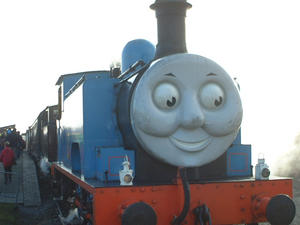
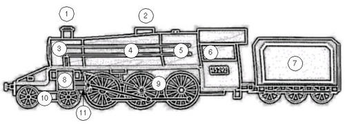
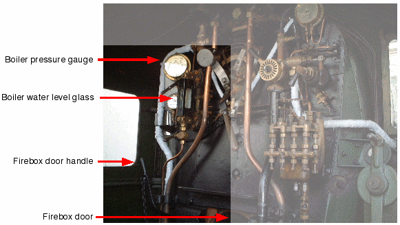

An introduction to steam locomotive technology
The steam locomotive dominated transport in the western world for more than a hundred years. It continues to exercise a popular fascination that most applications of technology can't match. Although railway companies and governments in the 1950s and 1960s sold the public on the idea that steam transport was dirty, noisy, costly, and inefficient, the reality is that the most modern of the steamers were superlative examples of the application of engineering principles, and approached the theoretical maximum efficiency that could be achieved from burning fuels. This article explains the fundamental aspects of the design and operation of a advanced steam loco. The basic principle -- that boiling water creates high-pressure steam which pushes on pistons -- is easily stated; the implementation details are much more complicated, and much more interesting. We start with an examination of the various parts of the machine.
Parts of the locomotive
A huge range of shapes and styles of steam locomotive were built, but from the very earliest to the very latest they all had the same basic components. In particular, a locomotive will need a firebox, a boiler, a dome, and a smokebox to generate and collect steam, and manage the exhaust of combustion products. It will need cylinders to provide the motive power, connecting rods to couple the cylinders to the wheels, and valvegear to control the admission of steam to the cylinders. And, of course, it will need a place for the crew to stand or sit, and a supply of fuel and water. Main parts of a steam locomotive. 1 - chimney; 2 - dome; 3 - smokebox; 4 - boiler; 5 - firebox; 6 - cab; 7 - tender; 8 - cylinder; 9 - driven wheels; 10 - non-driven wheels; 11 - connecting rods and valvegear
The firebox
The firebox is where the fire is built and maintained. Most British steam locos were designed to burn coal, but wood and oil were also used -- more so in the USA. As well as providing power to drive the locomotive, the steam it generates ultimately powers everything else on the train: the brakes, the carriage heating, the water injectors that fill the boiler when it is under pressure, the lubrication system, and even the whistle. The fire can also be used to keep your tea warm and, if you're brave, cook your dinner. It is the job of the fireman to keep the fire at the right height, and to maintain the correct pressure in the boiler. If the fire gets too low, then there may not be enough pressure in the boiler to drive the locomotive, especially on hills. If it gets too high, then the boiler may have to exhaust steam through its safety valves, which is noisy and inefficient. As all the power of the engine ultimately comes from the fire, a heavy-duty loco will need a significantly larger firebox than smaller one. The largest fireboxes are found on passenger express trains, that have to pull a long train at high speeds. Firebox designs eventually became very sophisticated. The fundamental design challenge is to allow all the fuel, and the gasses generated, to combust fully, whilst air is being drawn at high speed through the fuel mass. This has to be done without causing damage to surrounding components, and without energy being wasted as hot gasses blow out of the chimney. Many fireboxes have a brick arch, which is exactly what its name suggests it should be. It's job was to store and concentrate the heat of the fire, by directing gas flow in an advantageous way. A working loco burns a lot of fuel and, if's solid, an awful lot of ash and clinker is generated. The ashpan is the hopper under the fire where this material collects. The unglamorous jobs of collecting clinker without disturbing the fire, and emptying the ashpan, were significant engineering challenges in their own right.The boiler
The boiler in a steam locomotive is essentially a big water tank through which run tubes that carry the hot gasses from the fire. Because the fire could otherwise be hot enough to melt the firebox itself, the water in the boiler usually completely encloses the fire chamber as well. As the hot gasses run through the boiler, they give up their heat to the water, which eventually boils and liberates steam. In an open water chamber like an uncovered saucepan, the temperature of boiling water will not usually exceed water's boiling point of 100 degrees Celsius. Energy added beyond that point has the effect of liberating more steam, without increasing the pressure of the steam, or increasing the water temperature. In a locomotive, however, the steam liberated by boiling cannot easily escape from the boiler -- it must do some work first -- so the boiler tends to run at a higher pressure than the surroundings. Increasing the water pressure also increases the boiling point, so more energy of combustion can be stored by raising the temperature still further. This principle of superheating was exploited by more modern boiler designs to improve efficiency. In the largest engines, pressures of over 300 psi were common; that's about ten times the pressure in fully-inflated car tyre. Because the boiler walls are rigid, there is little for them to do if the pressure gets too high other than to crack, which would be a Bad Thing. So there are normally pressure release valves in the top of the boiler to vent steam safely in the event of over-pressure. An over-pressure condition is most likely to occur where the fire has been built up too high for the work the engine is to do. Typically this will happen when the locomotive is bought to rest in a station with the fire still high from the journey. While it does no real harm to have the boiler blow off steam this way, it is noisy and damp, and therefore unpleasant for people nearby. As Gordon warns Thomas the Tank Engine : ''It isn't wrong, but we just don't do it!''. A good fireman is expected to know the route, and allow the fire to die down sufficiently when coming to an extended halt.The smokebox
Hot fumes from the firebox are drawn through the boiler tubes and are collected in the smokebox, from whence they are exhausted by the chimney. The smokebox commonly contains the superheater tubes and the blast pipes (see below). Superheater tubes are used to raise the temperature of the steam coming out of the boiler to above the boiling temperature of water. This is very difficult to do simply by heating the water itself - and the hotter the steam, the more efficient the locomotive (do a Web search for 'Carnot cycle' for a detailed explanation why this is). After heavy use the smokebox tends to accumulate dust and ash, so the front can usually be swung open for access. The handles on the front of the smokebox give many locos a distinctive "clock face" appearance.Simplified view of the arrangement of firebox, boiler, and smokebox. Note that the firebox and boiler are continuous, and that the fire chamber is completely surrounded by water. The hot gasses from the firebox are drawn along metal tubes in the boiler, eventually to escape through the firebox and chimney. Air to feed the fire is drawn from the dampers under the firebox, and through the firebox door in the cab
Chimney
The chimney serves as an exhaust for the fumes of combustion; obviously these fumes have to go somewhere. However, the chimney is more than just a hole in the top of the firebox, and chimney design was the subject of a great deal of research. This is because a roaring fire in the firebox will need a good supply of oxygen for combustion, so the chimney has to allow a good flow of air through the firebox and boiler tubes. At the same time, it has to prevent sparks from firebox from being swept out of the firebox and causing fires near the line. Track-side fires were more a problem in North America than in the permanently damp UK, and many US locomotives had elaborate spark arrestors in their chimneys. As well as combustion products, the chimney will also carry away the exhaust steam from the cylinders. Exhausting steam from the cylinders this way is not only convenient, it also improves combustion. This is because the rush of steam up the chimney draws air up into the firebox and thus through the fire. This additional flow of air carries more oxygen to the fire. This use of the exhaust steam from the cylinders to fan the fire is only possible when the locomotive is moving; when it is stationary no steam is exhausted and there is therefore no drawing effect. So all but the earliest locomotives had blast pipes whose job was to direct a jet of steam directly from the boiler up the chimney. Although this is potentially wasteful of steam, and therefore of energy, it does have the effect of drawing a more forceful stream of air through the firebox, and can be applied whenever there is steam in the boiler. The valve that admits steam from the boiler to the blast pipe is called the blower.The dome
The dome acts as the collector of steam from the boiler. It provides a volume of hot, dry steam away from the water in the boiler itself. As such it is usually built at, or close to, the highest point on the boiler. The use of a dome reduces the likelihood that water, or water vapour, will be fed into the cylinders instead of steam, which would have catastrophic consequences. Typically the driver's regulator handle (see later) operates a valve in the dome, so the driver can control the amount of steam fed into the cylinders and, therefore, the power generated by the locomotive.The cylinders
Hot steam under pressure is fed from the boiler into each cylinder, where it pushes a piston which eventually turns the wheels. The flow of steam into the cylinder is governed by the steam chest, a valve assembly mounted directly above the cylinder. The valves can admit steam either behind the piston, which pushes it forward, or in front of the piston, which pushes it back. The ability to apply steam to both sides of the piston is important because, unlike a car, locos don't have gearboxes. So the only way to switch a locomotive between forward and reverse motion is by controlling the times at which steam is injected onto each side of the piston. The opening and closing of the valves in the steam chest is controlled by the motion of the wheels themselves, adjusted by the driver by means of the reversing gear in the cab (see below). The wheel motion is coupled onto the steam chest by means of valvegear. Although the steam that is admitted to the cylinder is hot and dry, it very soon cools and, as it cools, water condenses out. Water is not very compressible, and if enough of it accumulates in the cylinder it may prevent full piston travel. If full-pressure steam is admitted to a cylinder whose piston cannot move properly, there is an excellent chance that this will blow the end of the cylinder off. So cylinders invariably have either safety valves or drain cocks. Drain cocks allow water that has condensed to run out, and are usually operated from the cab by the driver. As most drivers keep the drain cocks open whenever the train is stationary, you'll see a blast of steam from the cylinders as the train comes to a halt, and another blast of steam when it pulls away. Normal practice is to keep the drain cocks open for about six wheel revolutions.The steamchest and cylinder
The valves in the steam chest control the admission of steam onto the front or back of the piston. However, the steam chest alone cannot synchronize the valve action to the movement of the locomotive: this is the job of the valve gear. Typically the steamchest will either be an integral part of the cylinder assembly (as in the photo below), or will be mounted close to the cylinder assembly and coupled to it using thick pipework. The valves in the steamchest are actuated by a pushrod that is coupled to the valvegear. By controlling the timing of the valve movements with respect to the wheel movements, the locomotive can be driven forward or backwards, and with varying degrees of effort.In this photograph, the steamchest cover has been removed, showing the steamchest valves. In this example, the steamchest and the cylinder form a single assembly: you can see the piston itself at the bottom of the photo. Normally, steam would be admitted to the top of the steamchest, and the valves would admit it to either the front or the back of the piston. The opening and closing of the valves is controlled by the rod that enters the steamchest just below the cover: as the rod is pushed back and forward by the valvegear, steam is admitted to either side of the piston.
The valvegear
The purpose of the valvegear is to open and close the valves in the steamchest at the appropriate points, with respect to the motion of the wheels. Like everything else on a locomotive, the valvegear derives its motive force from the movement of the piston in the cylinder. The steamchest pushrod typically requires a full movement of about 4 inches to switch from full forward pressure on the piston to full reverse pressure. However, the piston itself may move through several feet during its working cycle. Clearly the steamchest cannot be directly coupled to the piston. In practice, some fraction of the piston's motion is coupled to the steamchest pushrod. That is, for each foot of motion of the piston, the steamchest pushrod may move up to an inch. In fact, the amount it moves, and the direction, will be controlled by the reversing gear in the cab. For example, when the steamchest pushrod is moving in the same direction as the piston, the loco is moving forward. When they are moving in the opposite direction, the loco is moving backwards. Between these two extremes the loco will not be powered at all. As can be seen from the photo, the system of linkages associated with the valvegear could be quite complex. The photo shows a typical 'Walschaerts' configuration, which was popular from about 1860 onwards.Connecting rods
The pistons move in a reciprocating, front-to-back fashion but wheels, of course, have to rotate. The connecting rods connect the pushrods of the pistons to the wheels, with a rotating coupling at each end. To prevent the piston being subjected to a stressful bending action, the rotating coupling at the pushrod end takes the form of a crosshead which slides back and forth along slidebars. Because of the considerable stresses involved, all these components are substantial steel constructions, and need rigorous lubrication. In most cases, lubricating oil was dripped continuously onto these components using pumps.The tender
A large locomotive consumes a good deal of coal and water, and it is more efficient if the loco carries its own supplies, rather than having to stop to refuel and re-water every few miles. Small engines would carry as much water as could be accommodated in their tanks, and as much coal as would fit in a hopper behind the cab. These supplies were not adequate for large locos, so such locos would typically pull a tender. The tender was nothing more than a big hopper full of coal and water, towed along behind the engine.Types of locomotive
Steam locomotives can be categorised in a number of ways. A major distinction for example, is whether the loco has a tank or separate tender. Whichever it has, a particular loco will have a specific wheel plan, that is, a certain layout of driven and non-driven wheels. On engines with tanks, different types and locations of tank were employed. This section examines some of the common design patterns that locomotive and railway designers have employed.Tank engines and tender engines
Small locomotives, often used for industrial and shunting duties, generally carried their own water supply in an on-board tank. They would frequently carry a supply of coal as well. This was convenient, and made the locomotive self-contained. Industrial and shunting engines were seldom very far from a source of coal and water, so this arrangement generally worked quite well. However, most large locomotives -- whether used for passengers or freight -- had separate tenders. The tender carried water and coal, and was towed along behind the engine. The use of a tender considerably increased the range that can be covered between refuelling stops. However, a tender engine is significantly more complex to prepare than a tank engine, as the tender itself has to be prepared, loaded with consumables, and coupled to the engine. Of course, tender engines are less self-contained than tank engines. Among tank engines, a number of different tank arrangements were in widespread use, as will be described later.Gauge
The gauge of the track, and therefore of the locomotive and train, is the distance between the inner edges of the rails. In the UK and the USA, 'main line' railways -- railways that span large distances at high speed -- generally run on a gauge of 4' 8" ('standard gauge'). The common story that this gauge derives ultimately from the wheel spacing of Roman chariots is almost certainly an urban myth. In fact, the Romans did not use chariots for transport, either in war or peace, although they did race them in specially-designed stadiums. Chariots were a Greek idea, and were considered obsolete by the early days of the Roman empire. In reality, a number of different track gauges operated side-by-side in the UK when the early railways were privately owned. In contrast to the uniformity of main line gauge -- at least after the early 'guage wars' -- there was historically far less agreement on a standard gauge for industrial locomotives. Frequently these were what would now be termed 'narrow gauge', that is, two feet or less. Gauges of 18 inches and, occasionally, 12 inches were to be found in quarries and mines. Narrow gauge track is less expensive and easier to lay. However, the height of a locomotive is ultimately limited by its gauge. A tall loco on narrow rails will be unstable, particularly when cornering.Wheel plans
Many small industrial and shunting locomotives have only four or six wheels, all of which are driven. However, four or six wheels may not be sufficient for a high-speed passenger locomotive, whether they are driven or not. If the locomotive is long - and it will be if it is to house a powerful boiler - then more wheels will be needed to carry the weight -- making the frame substantial enough to carry a heavy boiler with wheels only at the ends would have led to a very heavy locomotive. Where the wheels are merely for load-bearing purposes, they need not be driven. For wheels to be driven, they must be coupled onto the drive train in some way, which increases complexity and expense. However, the more wheels that are driven, the more traction that can be applied to the track -- steel wheels on a steel track do tend to slip under power. Although most locomotives carried equipment to spray the track with sand and increase friction, driving more wheels had the same effect with less wear on the moving parts. For a train to achieve high speeds, the driven wheels must be quite large (see photo below). This is because the wheel rotates exactly once per stroke of the piston. To achieve high speeds with small wheels would require very rapid piston strokes, which is inefficient and prone to excessive wear. Occasionally, loco designers did experiment with really huge wheels, sometimes ten feet in diameter or more. The problem with these designs is that the axles of such wheels will need to be five feet above the track, which is where the boiler or firebox ought to be. In practice, only one such wheel could be driven, which could lead to poor traction on the rails. Such designs were rarely successful, and mostly did not catch on.| The wheel of a large express locomotive could be more than four feet in diameter. Child shown for scale |
Tank arrangement
Conventionally, the tank arrangement is indicated by an abbreviation after the wheel plan (see below). For example, in the designation '0-6-0T', the 'T' simply stands for 'tank', and denotes the standard tank arrangement. The following table describes some of the most common tank layouts and their abbreviations.| Standard tank engine | T | In the standard tank engine, the tanks are supported by the engine's chassis, one on each side of the boiler. This construction was very popular owing to its simplicity. However, it had the effect of making access to the running gear difficult. In addition, heat was lost needlessly from the top of the boiler, which was somewhat wasteful. |
| Well tank engine | WT |
 In the well tank layout, the bulk of the water was carried low
down between the chassis members. This had the effect of
keeping the tank out of the way, but there was frequently not
enough room to store sufficient water. Consequently, as the
photo shows, well tank engines frequently had auxiliary
side tanks in addition to the well.
In the well tank layout, the bulk of the water was carried low
down between the chassis members. This had the effect of
keeping the tank out of the way, but there was frequently not
enough room to store sufficient water. Consequently, as the
photo shows, well tank engines frequently had auxiliary
side tanks in addition to the well.
|
| Saddle tank engine | ST | In the saddle tank layout, the tank 'hangs' from the boiler like a saddle. This keeps the tank clear of the chassis, while retaining the same capacity as a standard tank. However, the construction of the tank is much more difficult than a standard tank, and the weight of the water is carried higher on the locomotive. |
| Pannier tank engine | PT | In the pannier tank layout, the tank is raised above the chassis, but does not straddle the boiler like a saddle tank. The construction is simple and the centre of gravity kept lower, but the capacity is not as great as a standard or saddle tank. |
Operating the locomotive
All but the smallest locomotives were driven by a crew of two: the driver ('engineer' on some railways) and the fireman. On small industrial locos, it was possible for the same person to play both roles. In general, the job of driver was considered to be the more prestigious and senior, and most railway companies had strict career progression rules from fireman to driver. Normally a would-be driver would have to serve as fireman for several years, and take examinations, before being appointed as a driver.Fireman's duties
The fireman's main job is to ensure a steady supply of steam at the appropriate pressure to provide power to the engine. This is much more difficult than it sounds. The engine's steam requirements vary considerably according to the load it is pulling, and the gradient. The fireman has to predict the steam requirements for some distance ahead, and adjust the fire accordingly. Some of the more important controls on the fireman's side of the footplate are shown in the image below. Controls on the fireman's side of the footplate. Not visible in the photo, because they are down by the floor, are the injectors and damper control (see text for details). The small platform above the firebox door is the warming tray, used for keeping lubricating oil liquified, and for keeping the crew's tea warm In order to provide steam, there must be sufficient water in the boiler. When the engine is cold, the boiler can be filled with water at ordinary pressure. However, when the engine is running the boiler will be under considerable pressure. To fill the boiler requires the use of injectors. Injectors utilize the energy generated by the sudden contraction of cooling steam to drive water into the boiler against its pressure. To power the injectors a supply of steam is required. Larger engines had two types of injectors: live steam, and exhaust steam, injectors. A live steam injector was powered by steam from the boiler itself, while an exhaust steam inector is power by steam exhausted from the pistons. Exhaust steam injectors are more economical to run, but do not work when the locomotive is standing still (because there is no exhaust steam). The water level in the boiler must always be kept within well-defined limits. If there is too much water, there will not be space for the steam to develop. If too little, there is a risk that the firebox crown (i.e., the top) would recieve insufficient cooling, and melt. To determine the water level, the fireman uses a sight glass mounted on the back of the boiler and connected directly to it. His aim is to keep the water level visible in the sight glass. Water will be consumed more rapidly when the loco is working hard. The fireman must also ensure that the steam pressure in the boiler is maintained within working limits. This is done by adjusting the height of the fire. To raise the fire, the fireman can add more coal (up to a point), and/or increase the flow of air through the firebed. Air can be drawn in through the firebox door, which is also used for loading the firebox with coal. When the firebox door is open, a greater volume of air can be drawn through the fire, increasing combustion. Most locos also have an adjustable damper which regulates air intake through the front of the firebox. Using the coal depth, firebox door, and damper, the fireman adjusts the rate of combustion in accordance with the required steam pressure. When the loco is moving, airflow through the fire can be much greater than when it is stationary. In addition, airflow will vary according to whether the loco is running forwards ('chimney first') or backwards ('cab first'). If a greater airflow is required when the loco is stationary (when building up steam at a station, for example), the blower can be opened (see below). Part of the fireman's skill is to be able to anticipate changes to steam requirements, and adjust the fire height in advance. It takes some time for pressure to raise, even with the fire roaring, so steam cannot be generated on demand. It can be embarrassing to run out of steam half-way up a hill.
Driver's duties
The driver is responsible for controlling the speed and direction of the locomotive. This control is achieved using the regulator, reversing gear, and brake. Controls on the driver's side of the footplate. Not visible in the photo, because they are down by the floor, are the rail sanding gear and cylinder drain cocks (see text for details) The regulator is the 'throttle' of the locomotive; it controls the delivery of steam from the boiler into the cylinders. With the regulator fully open, a high volume of steam is admitted, and maximum power may be generated. However, the cylinder power is influenced by the reversing gear. This control adjusts the proportion of the piston stroke for which the steam valves are open into the piston. It also controls whether steam is admitted in front or behind the piston, thus controlling the direction of travel. For maximum power, the regulator needs to be fully open and the reversing gear fully forward or fully reversed. In practice, both the reversing gear and the regulator contribute to the power generated by the piston, and thus to the speed of the locomotive. If the regulator is closed, the loco will gradually come to a halt. However, all locos will have additional braking capacity, provided either by mechanical or vacuum brakes, or both. Passenger locos mostly used vacuum brakes, with the coaches and the engine on the same vacuum circuit. A vacuum brake was released (that is, not braking) by holding the braking system at a vacuum. If the vacuum was destroyed (by admitting air to the system), the brakes are applied. This system offers significant safety advantages over mechanical or pressure operated brakes. In particular, if a leak develops in the system, it will tend to stop the train. In addition, if part of the train becomes decoupled, the rush of air into the brake hoses will immediately apply the brakes on both parts of the train. As well as controlling the speed and direction, the driver has numerous other controls to be concerned with. The drain cocks allow condensation to be drained from the cylinders. Typically the drain cocks are opened whenever the loco comes to a stop, and remain open for the first few yards of motion. Water is not particularly compressible, and if it condenses in the cylinders, the motion of the piston will probably cause considerable damage. The driver also has controls to deposit sand on the rails. This improves traction between the wheels and the rails, particularly on hills. The blower allows steam from the boiler to blast directly up the chimney. Although this is wasteful of steam, it has the effect of drawing a strong stream of air through the fire, increasing its combustion rate. The blower is particularly important in tunnels, to counter the back-pressure caused by the sudden obstruction of free flow from the chimney. In some cases this back-pressure could be large enough to 'lift' the fire, that is, raise it from the firebed. If the firebox door was open, there could be a flashback onto the footplate, with catastrophic results.